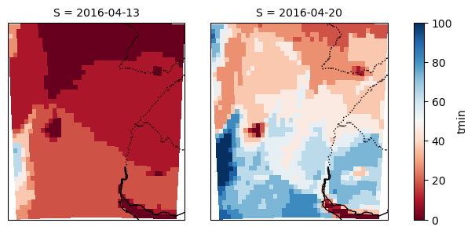
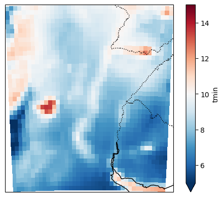

Nota
Pronostico probabilistico para temperatura minima.
¿Como generar un pronóstico probabilistico para la semana 2 con python?
En este tutorial vamos a explorar como generar una visualización de pronóstico:
Vamos a elegir un dominio reducido
Tomar datos diarios de temperatura mínima correspondiende a la semana 2 y aplicar el promedio
Elegir un umbral de temperatura minina y calcular la probabilidad de que la temperatura mínima sea menor a ese umbral
Graficar
[1]:
# Como siempre, partimos importando los modulos a utilizar:
%matplotlib inline
import xarray as xr
import s3fs
import netCDF4
import numpy as np
import pandas as pd
import datetime
from datetime import timedelta
import os
import sys
import datetime
import cartopy.crs as ccrs
import cartopy.feature as cfeature
import matplotlib.pyplot as plt
[2]:
def preprocess_ds(ds):
ds = ds.assign_coords(S = ds.time.values[0])
ds['time'] = ds.time.values - ds.time.values[0]
ds = ds.rename({'time': 'leadtime'})
return ds
Vamos a hacer este pronóstico para la semana del 28 de abril de 2016 al 4 de mayo de 2016 con dos pronósticos inicializados con una semana de diferencia. Vamos a elegir el umbral de temperatura mínima de 10 grados
[3]:
variable = 'tmin'
umbral = 10
lat_n = -25
lat_s = -35
lon_w = -65
lon_e = -55
os.system('mkdir -p ./tmp')
#fechas de inicializacion del pronostico
ref_date = [datetime.datetime.strptime('20160413', "%Y%m%d"), datetime.datetime.strptime('20160420', "%Y%m%d")]
Vamos a bajar los datos para esas fechas y regiones
[4]:
# DATOS CORREGIDOS
fs = s3fs.S3FileSystem(anon=True)
BUCKET_NAME = 'sissa-forecast-database'
tforecast = 'subseasonal'
modelo = 'GEFSv12_corr'
for i in ref_date:
PATH = tforecast + '/' + modelo + '/' + variable + '/' + i.strftime('%Y') + '/' + i.strftime('%Y%m%d') + '/'
# Listamos todos los archivos dentro del bucket + PATH
awsfiles = fs.ls('s3://' + BUCKET_NAME + '/' + PATH)
for ii, awsfile in enumerate(awsfiles):
if not os.path.isfile('./tmp/corr_' + variable + '_' + i.strftime('%Y%m%d') + '_' + str(ii) + '.nc4'):
print('Extrayendo datos del archivo:')
print(awsfile)
with fs.open(awsfile) as f:
gefs = xr.open_dataset(f)
gefs = gefs.sel(lat=slice(lat_n, lat_s), lon=slice(lon_w, lon_e))
gefs = gefs.assign_coords(M= ii)
ds = gefs[variable]
ds.to_netcdf('./tmp/corr_' + variable + '_' + i.strftime('%Y%m%d') + '_' + str(ii) + '.nc4')
f.close()
Extrayendo datos del archivo:
sissa-forecast-database/subseasonal/GEFSv12_corr/tmin/2016/20160413/tmin_20160413_c00.nc
Extrayendo datos del archivo:
sissa-forecast-database/subseasonal/GEFSv12_corr/tmin/2016/20160413/tmin_20160413_p01.nc
Extrayendo datos del archivo:
sissa-forecast-database/subseasonal/GEFSv12_corr/tmin/2016/20160413/tmin_20160413_p02.nc
Extrayendo datos del archivo:
sissa-forecast-database/subseasonal/GEFSv12_corr/tmin/2016/20160413/tmin_20160413_p03.nc
Extrayendo datos del archivo:
sissa-forecast-database/subseasonal/GEFSv12_corr/tmin/2016/20160413/tmin_20160413_p04.nc
Extrayendo datos del archivo:
sissa-forecast-database/subseasonal/GEFSv12_corr/tmin/2016/20160413/tmin_20160413_p05.nc
Extrayendo datos del archivo:
sissa-forecast-database/subseasonal/GEFSv12_corr/tmin/2016/20160413/tmin_20160413_p06.nc
Extrayendo datos del archivo:
sissa-forecast-database/subseasonal/GEFSv12_corr/tmin/2016/20160413/tmin_20160413_p07.nc
Extrayendo datos del archivo:
sissa-forecast-database/subseasonal/GEFSv12_corr/tmin/2016/20160413/tmin_20160413_p08.nc
Extrayendo datos del archivo:
sissa-forecast-database/subseasonal/GEFSv12_corr/tmin/2016/20160413/tmin_20160413_p09.nc
Extrayendo datos del archivo:
sissa-forecast-database/subseasonal/GEFSv12_corr/tmin/2016/20160413/tmin_20160413_p10.nc
Extrayendo datos del archivo:
sissa-forecast-database/subseasonal/GEFSv12_corr/tmin/2016/20160420/tmin_20160420_c00.nc
Extrayendo datos del archivo:
sissa-forecast-database/subseasonal/GEFSv12_corr/tmin/2016/20160420/tmin_20160420_p01.nc
Extrayendo datos del archivo:
sissa-forecast-database/subseasonal/GEFSv12_corr/tmin/2016/20160420/tmin_20160420_p02.nc
Extrayendo datos del archivo:
sissa-forecast-database/subseasonal/GEFSv12_corr/tmin/2016/20160420/tmin_20160420_p03.nc
Extrayendo datos del archivo:
sissa-forecast-database/subseasonal/GEFSv12_corr/tmin/2016/20160420/tmin_20160420_p04.nc
Extrayendo datos del archivo:
sissa-forecast-database/subseasonal/GEFSv12_corr/tmin/2016/20160420/tmin_20160420_p05.nc
Extrayendo datos del archivo:
sissa-forecast-database/subseasonal/GEFSv12_corr/tmin/2016/20160420/tmin_20160420_p06.nc
Extrayendo datos del archivo:
sissa-forecast-database/subseasonal/GEFSv12_corr/tmin/2016/20160420/tmin_20160420_p07.nc
Extrayendo datos del archivo:
sissa-forecast-database/subseasonal/GEFSv12_corr/tmin/2016/20160420/tmin_20160420_p08.nc
Extrayendo datos del archivo:
sissa-forecast-database/subseasonal/GEFSv12_corr/tmin/2016/20160420/tmin_20160420_p09.nc
Extrayendo datos del archivo:
sissa-forecast-database/subseasonal/GEFSv12_corr/tmin/2016/20160420/tmin_20160420_p10.nc
Acomodamos los datos
[5]:
#abro los datos corregidos
ds = []
for i in ref_date:
aux = xr.open_mfdataset('./tmp/corr_' + variable + '_' + i.strftime('%Y%m%d') + '*.nc4', engine='netcdf4', combine='nested', concat_dim=['M'], preprocess=preprocess_ds)
ds.append(aux)
ds = xr.concat(ds, dim='S')
print(ds)
<xarray.Dataset>
Dimensions: (leadtime: 34, lat: 41, lon: 41, M: 11, S: 2)
Coordinates:
* leadtime (leadtime) timedelta64[ns] 0 days 1 days ... 32 days 33 days
* lat (lat) float64 -25.0 -25.25 -25.5 -25.75 ... -34.5 -34.75 -35.0
* lon (lon) float64 -65.0 -64.75 -64.5 -64.25 ... -55.5 -55.25 -55.0
* M (M) int32 0 1 10 2 3 4 5 6 7 8 9
* S (S) datetime64[ns] 2016-04-13 2016-04-20
Data variables:
tmin (S, M, leadtime, lat, lon) float64 dask.array<chunksize=(1, 1, 34, 41, 41), meta=np.ndarray>
Selecciono la semana del 28 de abril al 4 de mayo y calculo la probabilidad de que la temperatura media en esa semana sea menor al umbral para los pronósticos iniciados en las dos fechas elegidas
[6]:
prob = []
for i in ds.S.values:
aux = (ds.sel(S=i, leadtime = slice(np.datetime64('2016-04-28', '[D]') - i, np.datetime64('2016-05-04', '[D]') - i)).mean('leadtime', skipna=True) < umbral).sum('M') / len(ds.M.values) * 100
prob.append(aux)
prob = xr.concat(prob, dim='S').compute()
print(prob)
<xarray.Dataset>
Dimensions: (lat: 41, lon: 41, S: 2)
Coordinates:
* lat (lat) float64 -25.0 -25.25 -25.5 -25.75 ... -34.5 -34.75 -35.0
* lon (lon) float64 -65.0 -64.75 -64.5 -64.25 ... -55.5 -55.25 -55.0
* S (S) datetime64[ns] 2016-04-13 2016-04-20
Data variables:
tmin (S, lat, lon) float64 27.27 27.27 27.27 9.091 ... 0.0 0.0 0.0 0.0
Graficamos las probabilidades
[7]:
p = prob[variable].plot(col='S', cmap='RdBu', subplot_kws={"projection": ccrs.Orthographic(-60, -30)}, transform=ccrs.PlateCarree())
for ax in p.axs.flat:
ax.coastlines()
ax.add_feature(cfeature.BORDERS, linestyle=':', edgecolor='black')

Ahora descargamos los datos para esa semana de era 5 y la graficamos
[8]:
# Obtenemos los datos de ERA5
fs = s3fs.S3FileSystem(anon=True)
BUCKET_NAME = 'sissa-forecast-database'
tforecast = 'ERA5'
modelo = 'ERA5'
list_df = []
PATH = tforecast + '/' + variable
awsfile = fs.ls('s3://' + BUCKET_NAME + '/' + PATH + '/2016.nc')
with fs.open(awsfile[0]) as f:
era = xr.open_dataset(f)
era = era.sel(latitude=slice(lat_n, lat_s), longitude=slice(lon_w, lon_e), time=slice('2016-04-28', '2016-05-04')).mean('time')
p = era[variable].plot(cmap='RdBu_r', subplot_kws={"projection": ccrs.Orthographic(-60, -30)}, transform=ccrs.PlateCarree(), vmin=5, vmax=15)
p.axes.add_feature(cfeature.BORDERS, linestyle=':', edgecolor='black')
p.axes.coastlines()

[ ]: